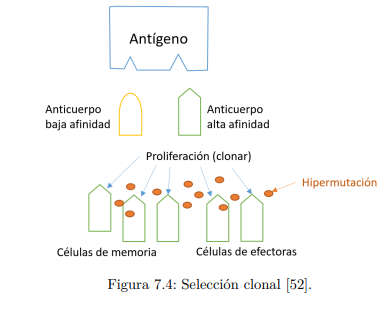
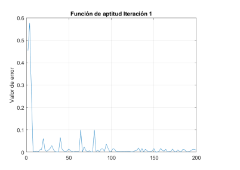
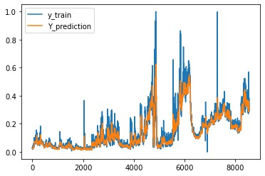
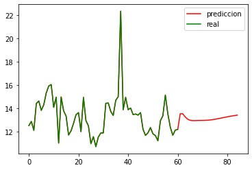

I am currently a professional in electronic engineering. I have experience in software development using architectures based on microservices and AWS infrastructure. I have knowledge in digital signal processing, power electronics, AWS cloud services, infrastructure as code in cloudformation, control systems, Deep Learning, experience with microcontrollers, interest in Distributed Systems, artificial intelligence, cloud infrastructure. I motivate teamwork and a collaborative spirit to carry out project-oriented activities in electronic engineering, software or telecommunications.
As my thesis work, I made an algorithm for the tuning of PID controllers in an AC-DC converter.
The algorithm is based on the artificial immune system where the behavior of the human immune system. Specifically, it is based on the principle of clonal selection. where an individual is exposed to a pathogen and antibodies are created that are evolutionarily altered to to eliminate the pathogen.
The algorithm was used in an optimization problem to be able to find the PID controller that gives maximum efficiency to a PFC Boost rectifier.
 As a personal project, make a prediction of the chlorophyll census data of a plant. For this I used a LSTM recurrent neural network
I got satisfactory results and managed to get the chlorophyll data from one week in the future. With this, decisions can be made and preventive actions can be taken in the event of any abnormality in the data.
 